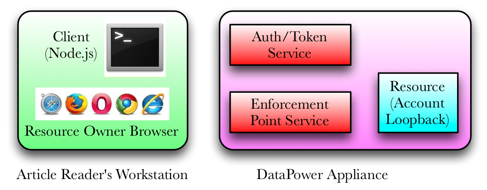

This page is served by a Node.js server playing the role of an OAuth client application. It complements the exercise of from the article Implementing OAuth with WebSphere DataPower Appliances, Part 6 as updated Summer 2014. In the figure below, the purple box represents the DataPower services you created for the exercise. The green box represents processes in your workstation. The Node.js a server simulates an OAuth client and writes status messages to the command line. Your browser plays the role of the resource owner.
This page represents Step 2 shown in Figure 1 of the article and reproduced at the bottom of this page. The login requirement was removed for simplicity. This is the page from which Step 3 of Figure 1 is initiated.
Much of the OAuth interaction happens between the OAuth client and the authorization/token server. The activity is best viewed from the Node.js command line.
Figure 1 from Part 6 article